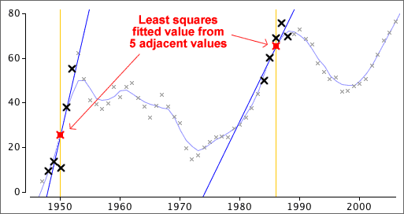

Least squares smoothing of adjacent values
Another method that provides smoothed values up to both ends of a time series is called lowess (locally weighted scatterplot smoothing). When used with time series, it is similar to running means except that instead of using the average of values at adjacent times, it fits a least squares line through them and uses this least squares line to estimate the smoothed value.


The number of adjacent points used for each smoothed value can be adjusted. As this 'window' becomes wider, the values are smoothed more, but if it is too wide, detail is lost.
Since a separate least squares line must be fitted to obtain each smoothed value, a computer must be used to apply this method.